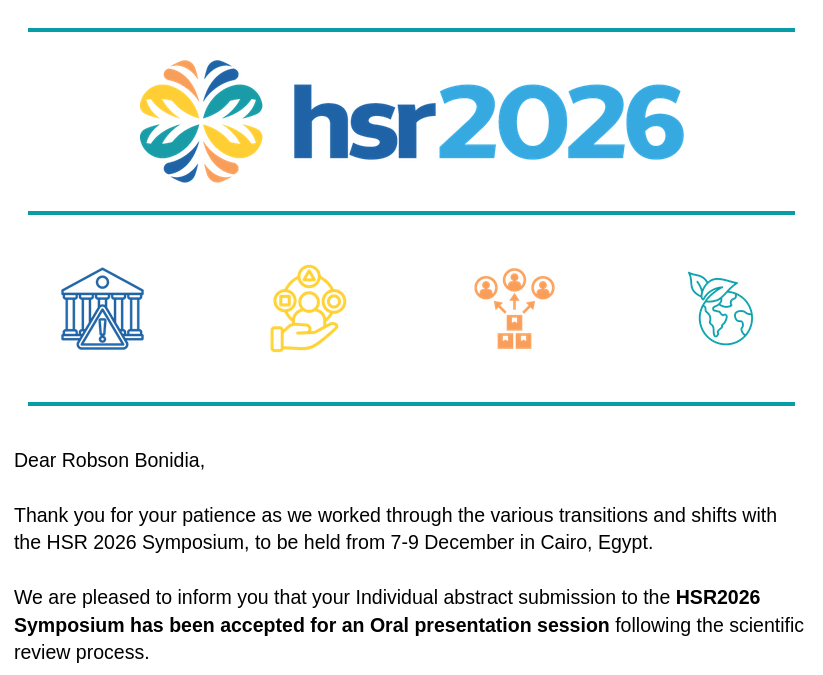
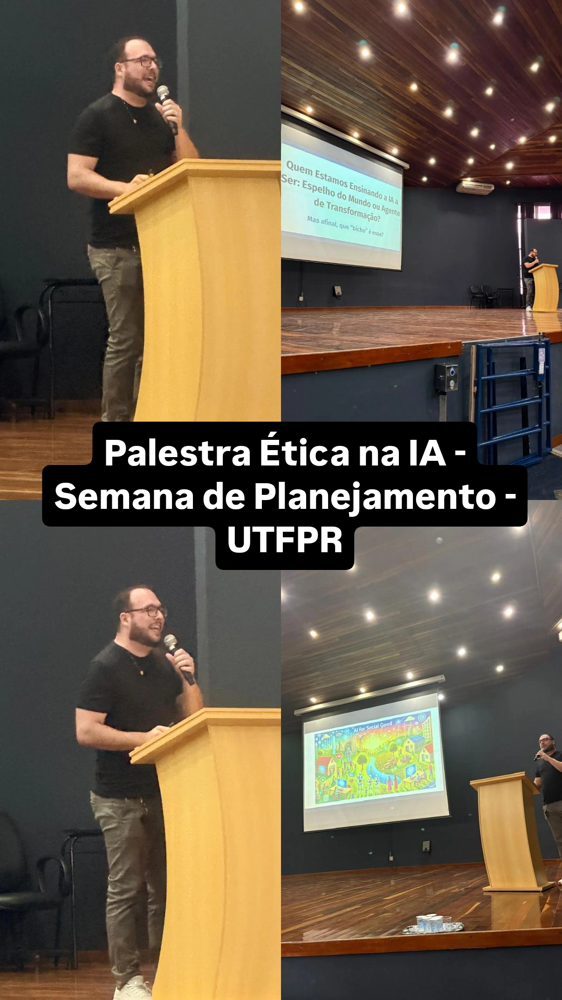
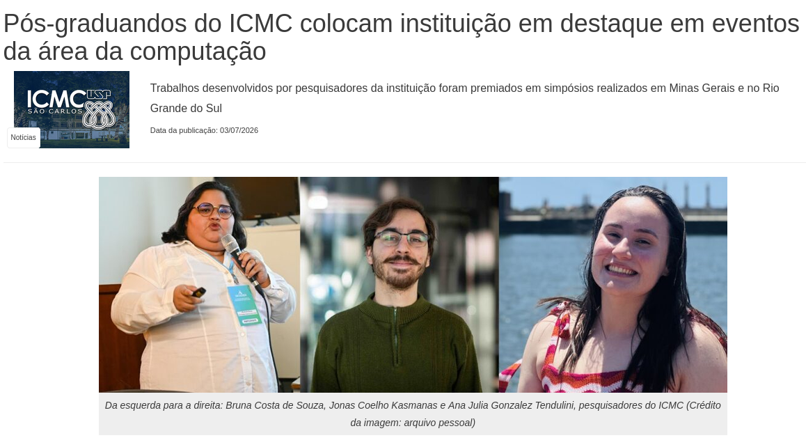
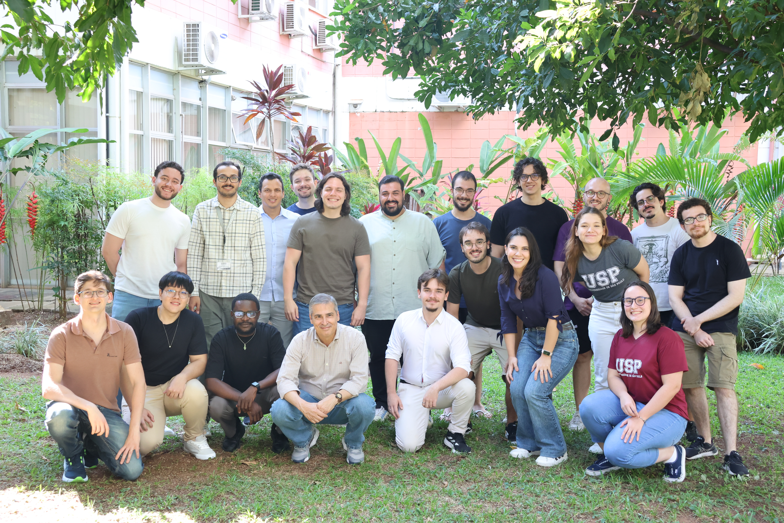
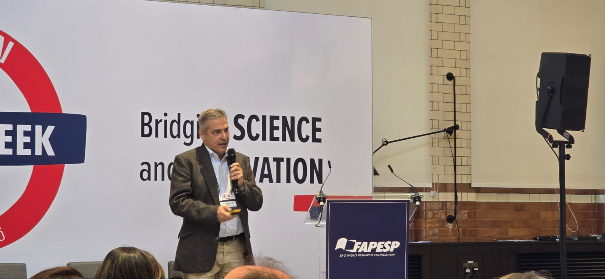
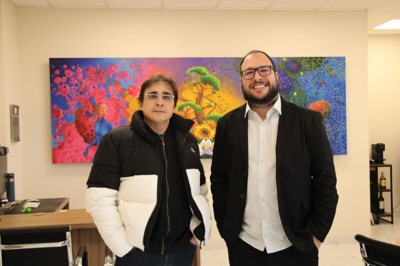
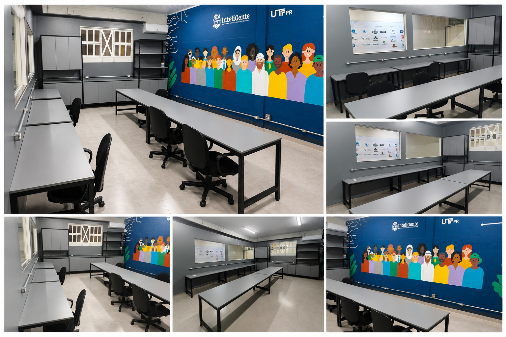
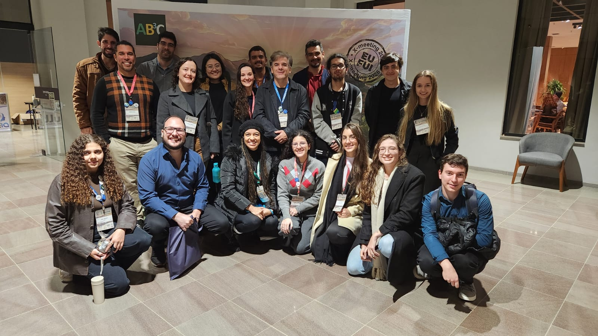
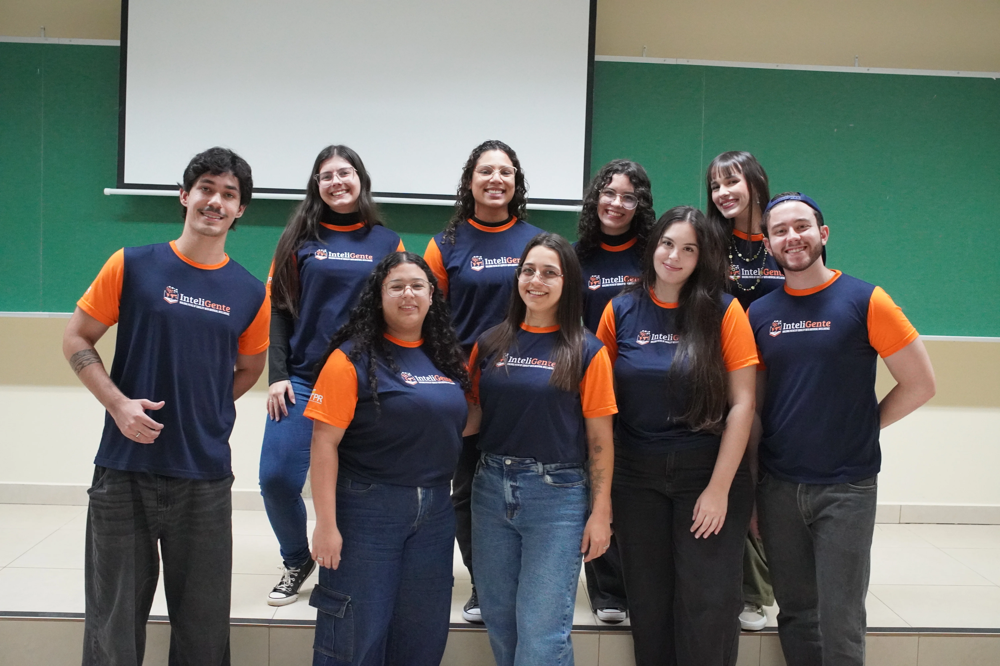

News

Our main objective is to create AutoAI-Pandemics, a simple and integrated platform that allows non-experts, including biologists, physicians, epidemiologists and other stakeholders, to apply data science and machine learning techniques effectively.


Some studies and solutions are available.
Democratizing Machine Learning in Life Sciences - Automated Feature Engineering and Metalearning for Classification of Biological Sequences.
Read more Access solutionEmpowering Breakthroughs in Life Sciences with End-to-End Machine Learning
Read more Access solutionEnd-to-End Machine Learning to to Predict Protein-Protein Interactions.
Read more Access solutionFeature Extraction Package for Biological Sequences Based on Mathematical Descriptors.
Read more Access solutionDemocratizing the Prediction of Interaction Between Non-Coding RNA and Protein with End-to-End Machine Learning.
Read more Access solutionEmpowering Portuguese Speakers With Digital Literacy and Real-Time Fact-Checking
Read more Access solutionA speech-based AI initiative focused on accessible cognitive screening
Read more Access solutionDominique v1: Your Information Integrity Assistant - Experimental Phase - Portuguese or English.
Read more Access solutionDominique v2: Your Information Integrity Assistant - Portuguese - Trained in 20,000 news.
Read more Access solutionRecommendation of Public Policies Based on Municipal Laws and Official Indicators
Read more Access solution
Total number of people directly and indirectly impacted by our projects
Accesses have been achieved by our solutions and articles
Book Pages accessed on the MinhaBiblioteca platform
People Reached by our activities and materials to democratize AI
Citations in academic papers have been earned by our studies
News published in national and international media
Awards and recognitions have been earned by our projects
Projects with the Community
A Playful Approach to Critical and Ethical Artificial Intelligence Education in Public Schools
Access solutionRecognitions and Awards
International Oral Presentation - Our study was selected following international peer review among more than 2,900 submissions. HSR is one of the world’s largest and leading conferences on health systems research.
[Link-1]Our student Bruna Souza won the award for best dissertation at the Brazilian Symposium on Computing Applied to Health (Artur Ziviani Thesis and Dissertation Award 2026).
[Link-1]InteliGente project was selected by the Brazilian National Commission for UNESCO and forwarded to the international phase of the UNESCO-King Hamad Bin Isa Al-Khalifa Prize for the Use of ICT in Education 2026, whose theme recognizes initiatives that use Artificial Intelligence to promote creativity, critical thinking, inclusion and equity in education.
[Link-1]Strategic Research Funding for Sabiá Data Lake (2026). The Sabiá Data Lake project secured BRL 3 million to build a secure and interoperable health data infrastructure for Paraná, integrating clinical, epidemiological, genomic, and socioeconomic data to support precision medicine and public decision-making.
[Link-1]Top 100 Global AI Solutions for the SDGs (2025). BioAutoML was selected among the world’s most impactful AI initiatives addressing the United Nations Sustainable Development Goals. Rated Outstanding (highest distinction) by international reviewers and included in the IRCAI Global Index of AI Innovations. One of only three Brazilian solutions featured in the 2025 global selection.
[Link-1] [Link-2] [Link-3]Top 100 Global AI Solutions for the SDGs (2025). InteliGente was selected among the world’s most impactful AI initiatives addressing the United Nations Sustainable Development Goals. Rated Excellent by international reviewers and included in the IRCAI Global Index of AI Innovations. One of only three Brazilian solutions featured in the 2025 global selection.
[Link-1] [Link-2] [Link-3]Top 100 Global AI Solutions for the SDGs (2025). BioPrediction was selected among the world’s most impactful AI initiatives addressing the United Nations Sustainable Development Goals. Rated Promising by international reviewers and included in the IRCAI Global Index of AI Innovations. One of only three Brazilian solutions featured in the 2025 global selection.
[Link-1] [Link-2] [Link-3]ConsCiêncIA Project (Literacy in Artificial Intelligence), recognized as the best ongoing research project in the field of Humanities and Applied Social Sciences in Brazil for undergraduate scientific initiation by Conic-Semesp (the Largest Scientific Initiation Congress in Brazil), among more than 1,400 registered projects, receiving R$1,500.
[Link-1] [Link-2] [Link-3]For the third consecutive year, one of our students has been selected by Prototypes for Humanity — this time, ChemAutoML, a project for drug discovery. From over 3,300 entries across 100+ countries, it was chosen among the top 100 innovations in the world.
[Link-1] [Link-2]Honorable Mention. Recognized as one of the best doctoral theses in Brazil in the field of Computer Science and Mathematics. CAPES is Brazil’s top national award for PhD theses (Honorable Mention indicates recognition among the best theses in the country).
[Link-1]InteliGente has been selected for the HundrED Global Collection 2026, placing us among the most impactful and scalable innovations in education worldwide. InteliGente stood out among 800+ global innovations reviewed by 250 experts, being recognized as one of the world’s most impactful.
[Link-1]We are co-authors of the scientific paper awarded first place at the 10th Paraíba Congress of Endocrinology and Metabolism — Machine Learning in Central Adrenal Insufficiency, organized by the Brazilian Society of Endocrinology and Metabolism – Paraíba Regional.
[Link-1]We received the V Academic Recognition Award in Human Rights, granted by the University of Campinas (Unicamp) and the Vladimir Herzog Institute, in the category Exact Sciences, Engineering, and Technology – Doctorate. The award recognizes research that makes a significant contribution to the promotion of human rights through social impact, innovation, and scientific relevance.
[Link-1] [Link-2]Our book is a finalist (5 books) for the Jabuti Academic Award, recognized among the best in Brazil in the field of computer science in 2024. The Jabuti is the most prestigious literary prizes in Brazil, celebrating excellence in academic and literary production across the country.
[Link-1] [Link-2] [Link-3]Dr. Bonidia and Dr. Carvalho are winners of the USP Outstanding Thesis Award 2025 (Prêmio Tese Destaque USP 2025), granted to the best doctoral thesis of the year in Exact and Earth Sciences by the University of São Paulo. This award recognizes research of excellence and high academic impact, and is one of the most prestigious distinctions from Brazil's leading public university and a reference in Latin America.
[Link-1]AutoAI-Pandemics was the only initiative from our country (Brazil) selected among the top 21 ideas in a prestigious global call promoted by AI4PEP, IDRC, and the UK International Development. The project received a grant of CAD 206,400 to advance its mission of using AI for pandemic preparedness and equity in the Global South.
[Link-1] [Link-2]Our Students Participated in the Global South AI4PEP "AI for Global Health Innovation" Challenge and Won Some Prizes - Third Place
[Link-1]Our Students Participated in the Global South AI4PEP "AI for Global Health Innovation" Challenge and Won Some Prizes - Honorable Mention
[Link-1]Finalist at the GESS Education Awards 2024 (Dubai) – Innovation in Education Category. Selected as a global finalist in one of the world's most prestigious education ceremonies, standing out among more than 900 entries from 60 countries. This recognition validates the development and implementation of high-impact educational solutions, placing our work among the top international innovators.
[Link-1] [Link-2] [Link-3]Global Finalist — Social Shifters Global Innovation Challenge 2024 (JPMorganChase) - Selected as finalist among 5,186 teams from 122 countries, in a global challenge that supported the development of 2,840 social impact solutions with the involvement of 2,180 volunteers worldwide.
[Link-1] [Link-2]InteliGente has been selected for the next phase of the LED Prize 2025 (chosen from a total of 2,041 entries), an initiative by Globo and the Roberto Marinho Foundation, which aims to recognize innovative initiatives that are driving transformations in Brazilian education.
[Link-1] [Link-2] [Link-3]Our BioAutoML project received an honorable mention from the Young Bioinformatics Award 2024, being chosen among the best theses in Bioinformatics and Computational Biology in Brazil.
See more: [Link-1]
Our paper: "Information Theory for Biological Sequence Classification: A Novel Feature Extraction Technique Based on Tsallis Entropy." Recognized by the journal's Academic Editor as an exceptional contribution to the field, 2024.
See more: [Link-1]
ÁGUEDA Project (Artificial Intelligence for Early Detection of Breast Cancer), recognized as the best ongoing research project in the field of Exact and Earth Sciences in Brazil by Conic-Semesp, among more than 1,200 registered projects, 2023.
Project to empower researchers in life sciences wins J.F. Marar Artificial Intelligence Prize for Undergraduate Studies
See more: [Link-1]
Two projects connected to AutoAI-Pandemias are among the 15 finalists of Falling Walls Lab Brasil 2023.
See more: [Link-1]



News

News

News

News

News

News

News

News

News

News

News

News

News

News

News
News

News

News

News
Over the years, our project has achieved large-scale visibility through structured programs, research, digital platforms, educational materials, awards, media coverage, and social media outreach. To ensure transparency and methodological rigor, our impact assessment follows an evidence-based framework that distinguishes between direct impact and indirect public reach, applying conservative conversion and overlap-correction factors.
We are based at two Brazilian universities, developing research, innovation, education, and social impact initiatives.
Av. Trabalhador São-Carlense, 400
Downtown, São Carlos – SP
ZIP Code 13566-590, Brazil
Av. Alberto Carazzai, 1640
Downtown, Cornélio Procópio – PR
ZIP Code 86300-000, Brazil
Contact us for research collaborations, institutional partnerships, projects, educational initiatives, or additional information.


![[Link-3]](https://ai4pep.org/wp-content/uploads/2023/07/Projects-2048x1707.png){kind=link}
![[Poster]](figures/news/114.png){kind=link}